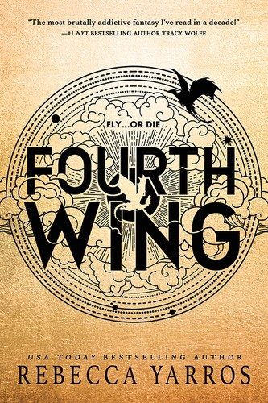
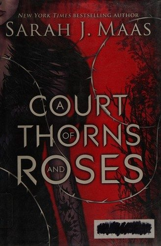
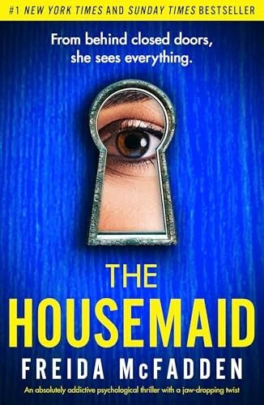
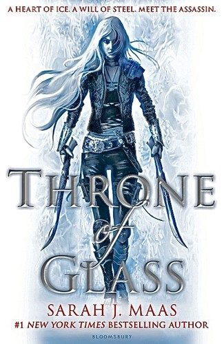
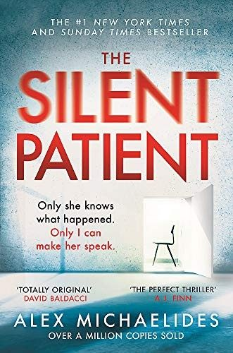
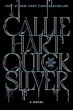
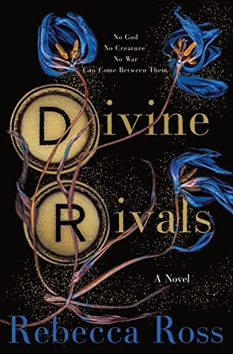
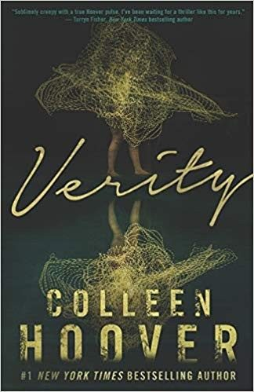
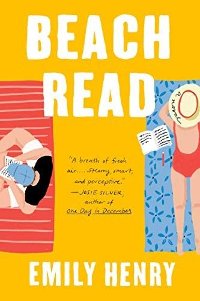
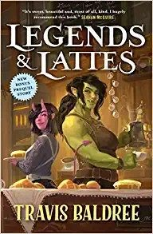

1.
Fourth Wing
by Rebecca Yarros
Her mother's enemies want her dead, and one of them is the most dangerous rider in the college.
Audible gives new members a free trial, and the audiobook you pick with your trial credit can stay in your library even if you cancel. Here is how it works, plus the ten books we would spend that credit on.
Prefer reading on a Kindle? Kindle Unlimited has a free trial too, with thousands of romantasy and romance titles included.
Try Audible free (paid link) Try Kindle Unlimited (paid link)Series starters and page-turners readers can't stop talking about, so one credit can lead you into a whole series.

Her mother's enemies want her dead, and one of them is the most dangerous rider in the college.

Fae courts, a human huntress and a slow-building love story across five books.

A woman with a past takes a live-in job with a wealthy family. Nothing in the house is what it seems.

An assassin's story that grows from a royal contest into a war for the whole continent.

A painter shoots her husband and never speaks again. Her therapist is determined to find out why.

Snowy fae lands, a thief with a secret and nonstop banter.

Two rival journalists competing for the same job, until a war and secret letters change the game.

A struggling writer finds an unfinished, disturbing manuscript in a famous author's home.

Two rival writers swap genres for a summer. Funny, emotional and very easy to love.

An orc retires from adventuring to open a coffee shop. The book that made cozy fantasy a genre.
Audible usually gives new members a free trial: pick an audiobook with your credit and keep it, even if you cancel before the trial ends. Kindle Unlimited also has a free trial with thousands of romantasy and romance titles included.
Try Audible free (paid link) Try Kindle Unlimited (paid link)